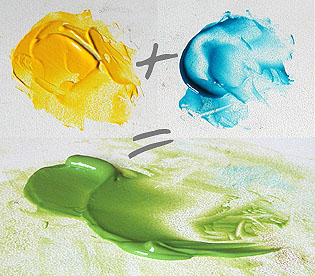
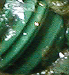
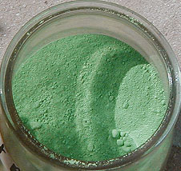

Finalement, après quelques millénaires de recherches, l'être
humain a réussi à synthétiser un nombre assez appréciable
de pigments verts de bonne qualité.
Lecture conseillée :
Le
vert sur Pourpre.com
1 - Synthèses des
verts

Le vert est le domaine d'application par excellence de l'art de la
synthèse, particulièrement facile à réaliser. En teinture et en peinture, la
Haute Antiquité (mais pas la préhistoire, curieusement) regorge déjà
d'exemples de mélanges donnant cette couleur.
Ceux-ci peuvent s'opérer, en synthèse
soustractive (synthèse habituelle pour les peintres), de deux manières :
*
bleu + jaune [+ élément additionnel]
* noir et jaune
[+ élément additionnel].
La seconde, toujours un peu magique, peut facilement être réalisée en peinture à l'huile, à
l'acrylique, au vinyle ou à la gouache et d'autres détrempes
dans certains contextes, mais pas par transparence (aquarelle, glacis). Elle est destinée aux peintures plutôt couvrantes, plutôt
opaques, sans quoi elle grisaille.
Le risque d'obtenir un gris, quels que soient les pigments utilisés, dépend
aussi d'un autre facteur, la transparence. Celle-ci, lorsqu'elle est poussée à
un point extrême, peut faire partiellement basculer la synthèse
du côté additif (voir effets de bord
in synthèse additive) parce que la source de lumière provient en
partie de l'arrière-plan. Ce cas de figure n'apparaît que dans des
mélanges particulièrement clairs, très fortement dilués.
Les bleus chauds (manganèse
et phtalocyanine de cuivre en premier lieu) donnent, en
combinaison avec un jaune de cadmium clair ou moyen
ou différents jaunes azoïques, des verts d'une
grande fraîcheur
et d'une luminosité importante.
Les bleus moyens comme le cobalt donnent des verts "standard".
Les bleus froids comme l'outremer foncé donnent des verts riches,
sophistiqués, impurs, semblables à la terre
verte par exemple (outremer foncé + ocre jaune). Jadis, la
guède occupait
le même rôle que l'outremer.
Une pointe de rouge peut tout changer, comme le blanc. Les
mélanges ternaires (bleu+jaune+X) donnent une gamme infiniment subtile, presque
semblable à celle que nous offre le spectacle de la nature.
Tous les verts synthétisés par les peintres sont couramment
nommés "verts palette".
2 - Pigments
verts
Vert émeraude
et vert viridien
"Viridien"
-->
Lecture conseillée :
Viride sur Pourpre.com
Fabriqué artisanalement puis industriellement dès 1859 (inventeur :
Pannetier, industriel : Guignet), le vert émeraude, pigment transparent et un peu froid, était le produit de l'action de l'acide borique sur le bichromate
de potasse. Dans tous les cas, il était
toxique (cancérigène, tératogène et mutagène, paraît-il). Il était utilisable comme "oxyde" dans les
arts du feu.
La formulation actuellement en usage est un sesquioxyde de chrome
hydraté (voir vert oxyde de
chrome). Elle n'est pas exactement une imitation, car elle a une vraie
originalité chimique. C'est plutôt une autre formulation non dépourvue d'intérêt
qui de plus n'est que très modérément toxique (éviter les contacts cutanés
répétés ou prolongés). La pierre précieuse et les deux couleurs contiennent
toutes du chrome.
La version actuelle comme l'original se prêtent, de par leur consistance et leur
couleur, au glacis principalement, en particulier sur
fond clair.
La couleur émeraude gagne à rester claire et transparente sur le tableau,
comme la véritable pierre - une splendeur, une surprise de la nature -, nommée
smaragdos en grec (d'origine orientale, selon l'Académie) qui peut être
claire et lumineuse, parfois aussi un peu moins
froide que le ou les pigments de ce nom car elle peut contenir des traces de fer
qui la rougissent.
Le terme "viridien" est un anglicisme qui n'est pas parfaitement
synonyme de "vert émeraude". Des compositions variées peuvent être
découvertes sous cet intitulé.
Lecture conseillée :
Le
vert émeraude sur Pourpre.com
Vert Véronèse
ou cendre verte
Composé d'arséniate de cuivre (acide arsénieux
+ acide acétique passés sur des sels de cuivre),
il comptait parmi les pires poisons et virait au noir en présence de soufre
(et même de plomb selon certains auteurs).
C'est aujourd'hui typiquement un composé phtalocyanique + un oxyde de
zinc (blanc). Les variétés sans zinc ni titane sont plus
transparentes et beaucoup plus intéressantes car on peut les utiliser comme l'original : en glacis.
Une visite
au Louvre permet de comprendre l'intérêt que Paolo Veronese portait aux glacis
réalisés avec cette somptueuse couleur employée pure.
Lire aussi l'article sur la cendre
bleue.
Lecture conseillée :
Le
vert Véronèse sur Pourpre.com
Vert de vessie
Vert nitroso-naphtol ou azo-nitroso-naphtol aujourd'hui, c'était hier un
véritable
poison préparé avec du carbonate de plomb et de
l'alun.
La base chromatique était apportée par une plante, le nerprun.
Aussi longtemps qu'aucune imitation ne fut créée, cette couleur ne
s'employait qu'en peinture à l'eau. Aujourd'hui, des fabricants proposent un
vert de vessie (imitation) pour la peinture à l'huile.
Il faut cependant remarquer que l'imitation elle-même semble présenter
quelques inconvénients. Quelques producteurs l'ont même évacuée de leurs
gammes.
Sa permanence laisse apparemment à désirer. Sa stabilité en mélange ne
serait vraiment assurée que dans la formulation nitroso-naphtol (indications
fabricants).
Lecture conseillée :
Le
vert de vessie sur Pourpre.com
Vert de Hooker
Utilisé pour la peinture à l'eau exclusivement, c'est un vert plutôt franc
- sans acidité et sans innocence - et assez chaud.
Créé par le peintre William Hooker (voir notamment
octavo.com/collections/projects/hoopom,
en anglais), il était un simple mélange de
bleu de Prusse et de
jaune du Cambodge.
Aujourd'hui, seule l'imitation semble disponible. Sa composition en acrylique extra-fine est
typiquement :
* PBk7 (noir de carbone pur)
* PG7 (vert phtalo)
* PY74 (arylide jaune 5Gx).
Une assez jolie combinaison ! D'autres, peut-être moins inventives mais très
efficaces, font intervenir un bleu anthraquinonique et un jaune nickel-azoïque.
Ce pigment, ou plutôt sa version contemporaine, est réputé très permanent. Il est en fait souvent semi-permanent. Il
est assez
transparent à cause du pigment jaune azoïque, mais plutôt sombre.
Lectures conseillées :
Le
vert de Hooker sur Pourpre.com
Octavo.com/collections/projects/hoopom
(anglais)
Vert de cadmium
C'est un vert très franc, lumineux, couvrant et colorant, à base de sulfure de cadmium-zinc
(PY35).
Dans certaines gammes du commerce, il est décliné en "vert de cadmium
clair" et "vert de cadmium". Nous n'avons pas testé la variété
claire.
Lire Les cadmiums.
Stil-de-grain
Du néerlandais schijtgroen, littéralement "vert d'excrément".
Fut-il extrait originellement extrait d'une sorte de guano ? Une
chose est sûre : face à l'intitulé de "vert caca d'oie" qui est peut-être le
plus proche de son origine réelle, nombre d'intervenants commerciaux des pays
francophones ont préféré une appellation plus phonétique, mystérieuse, un peu
exotique, qui a servi de véritable fourre-tout.
Il s'agirait en effet en Francophonie de colorants issus du
nerprun, de la gaude, de
feuilles de bouleau, du châtaignier rose et d'autres végétaux, voire plus
récemment, de produits directement issus de l'industrie pétrochimique. Déjà, il
y a quelques siècles, l'imprécision de l'intitulé "stil-de-grain" semblait
fournir l'occasion de donner une
nouvelle vie à des couleurs connues
- et éventuellement tombées en désuétude - depuis l'Antiquité ou le néolithique.
Le stil-de-grain "habituel" en France, celui d'Avignon, à base de
Rhamnus
infectorius, un épineux, correspond en principe à une laque de teinturier,
mais il a aussi servi à teinter du bois et d'autres matériaux. Dans le domaine
de la peinture, certains fabricants continuent de nos jours à proposer des
stil-de-grain jaunes, verts, rouges et bruns qui ne correspondent à rien de
précis. Concernant le "stil" avignonnais, il semble que des imitations de cette
probable imitation ont existé.
Nerprun ou autre, il s'agit, même dans ces
versions anciennes, de teintures végétales "petit teint".
Sauf erreur, bien que jolies, elles ne semblent guère convenir à des travaux de
valeur, sauf renouvellement régulier.
Cependant, dans le cas précis de la dorure, il est possible que les réactions
chimiques de la teinture de nerprun avec des métaux lourds présentent des
particularités intéressantes. Toute personne disposant d'informations à ce sujet
est bienvenue à les faire connaître.
Verts "phtalo"
Voir bleus "phtalo"
et phtalocyanines.
Vert japonais
C'est aujourd'hui un composé phtalocyanique.
Les peintres Japonais que nous avons interrogés ne savent pas à quoi correspond, parmi les nombreuses
couleurs qu'ils emploient, ce que nous appelons peut-être un peu exagérément
"vert japonais".
Vert de chrome
Ne pas le confondre avec le vert
oxyde de chrome. Utilisé au XIXème siècle, le vert de chrome
était composé d'un mélange de bleu
de Prusse et de jaune de chrome.
Sans permanence, fugace et instable en mélange, il est aujourd'hui introuvable.
Il n'est rien d'autre que le principal constituant des
verts anglais.
Verts prussiques ou anglais
Chrome (voir ci-dessus), plomb, zinc, ferrocyanure sont les composants de ces couleurs assez
variées et numérotées (les verts anglais sont assez nombreux). Dérivées du vert de chrome, lui-même dérivé du
bleu de Prusse et du jaune de chrome, elles sont instables en mélange et toxiques. D'habiles imitations
azoïques ou partiellement azoïques (remplacement
du composant chromé, conservation du ferrocyanure ou autres combinaisons) les ont
en bonne partie remplacés.
Comment caractériser leurs teintes ? Disons simplement qu'elles sont
"assez naturelles" sans être aussi subtiles que les terres vertes ou
l'oxyde de chrome.
Lecture conseillée :
Le
vert anglais sur Pourpre.com
Vert-de-gris
Lecture conseillée :
Le
vert-de-gris sur Pourpre.com
Etymologie
Altération
de vert de Grèce, selon le Robert qui s'inspire probablement d'Alcherius.
Celui-ci aurait nommé cette couleur "vert grec" au XIVème
siècle.
Sous sa forme naturelle, c'est un hydrocarbonate de cuivre
(CH2O-Cu),
se formant progressivement à la manière d'une rouille, lors du contact du cuivre
- ou d'un alliage en contenant - avec de l'air humide, de l'eau ou un acide.
On a
évidemment reproduit ce processus naturel à l'aide, dans un premier temps,
d'un élément acide (le marc de raisin a été particulièrement utilisé, ce
qui explique que la production fut concentrée dans certaines zones viticoles)
et, éventuellement, dans un second temps, un vinaigre (de trois jours à neuf
mois, en fait deux semaines en général) pour obtenir, à partir de feuilles de
cuivre ainsi dégradées, le verdet,
vert-de-gris ou vert de Grèce, une acétate
basique de formule brute C2H4O2Cu,
plus foncée, d'usage tinctorial ou pigmentaire. Ces composés étaient très
prisés durant l'Antiquité.
De longue date (au moins le XVème siècle), des verts de ce type
ont été transformés en bleus à l'aide de sels ammoniacaux.
Le chrome et le brome permettent d'obtenir un bleuissement (voir phtalocyanines
de cuivre).
Toutes nos sources s'accordent sur un point : les verts-de-gris sont fortement instables
en présence d'air, d'humidité ou plus généralement en
mélange (particulièrement avec la céruse). Ils sont
totalement incompatibles avec les huiles à peindre, on le sait depuis
longtemps. Mais vraiment bien isolés et employés à bon escient, ils peuvent
résister à l'épreuve du temps. Ils ont été utilisés à Pompéi où ils se
sont bien conservés, puis, surtout, au Moyen-âge.
Ils permettraient de réaliser très aisément des faux par l'illusion du
vieillissement.

Ils sont vraiment toxiques,
mais d'une manière heureusement décelable. Ils occasionnent
en effet des lésions - notamment en cas de contact cutané - qui peuvent facilement être
identifiées en espérant qu'il ne soit pas trop tard. L'ingestion est très
gravement pathogène. Il vaut mieux également éviter d'inhaler ces produits.
Le Vert
de malachite et quelques autres anciens verts de cuivre
Malachite
Etymologie : lire l'article du glossaire.
Il s'agit d'un pigment vert froid d'usage très ancien et d'origine naturelle,
principalement composé
de carbonate de cuivre
extrait en Sibérie, dans l'Oural, dans le Turkestan, en Hongrie, en Chine
(haute Antiquité), en Inde, au Tibet, dans le Sinaï et en Égypte ancienne
(dès le IIIème millénaire BC) où elle est utilisée en peinture,
en joaillerie et en cosmétique. En fait, on la trouve dans
des gisements
de cuivre aux quatre coins du monde, souvent dans les lieux où l'on extrait
aussi l'azurite. Cennini désigne
d'ailleurs le vert de malachite
sous l'intitulé de verde azzurro, le vert d'azur ou pierre d'Arménie
(dont la variété bleue est l'azurite).

L' aspect du pigment grossièrement broyé est diapré. La pierre est
très vitreuse, nettement zébrée et dans l'ensemble plutôt
bleutée que jaunâtre (voir photo, détail d'un travail de Catherine
Lisack).
La finesse du broyage joue un rôle
extrêmement important, tout comme pour le lapis-lazuli
et l'azurite : certains peuples ont
pratiqué exprès un broyage grossier pour conserver la luminosité et la
vivacité chromatique de ces pierres. Le broyage fin a cependant été largement
pratiqué par ailleurs de sorte à autoriser une utilisation dans les encres aux
époques où les verts vifs permanents étaient très rares (la malachite était
somme toute le seul).
Aujourd'hui, broyer fin semble un gâchis. C'est davantage la possibilité
d'obtenir un pigment naturellement hétérogène de cette qualité qui paraît
exceptionnelle. Pourtant, les rares détaillants qui vendent ce produit ne semblent
pas tous avoir pleinement saisi l'importance de ce point, certains proposant une
fine et coûteuse poudre d'aspect tristement homogène.
La poudre de malachite employée comme pigment est attestée par toutes les
sources comme étant d'une permanence extraordinaire, mais
d'un prix
extrêmement élevé. Par ailleurs, elle
ne serait pas stable en mélange et aurait été, pour cette raison, souvent utilisée pure
(informations non confirmées).
Sa cherté est peut-être ce qui a suscité l'invention (tardive) du vert de Brunswick,
une imitation. [note : cette couleur et l'original ont pu être nommés "verts de montagne"]
Rome, fière de ses terres vertes, a boudé la malachite en tant que pigment.
Le Moyen-âge occidental n'a pas suivi cette tendance et l'a largement utilisée.
Un carbonate de cuivre vif et chaud, aurait
circulé abondamment à la fin du Moyen-âge. La malachite est plutôt froide. Alors
de quoi s'agissait-il donc ? La source de cette information est en principe
plutôt fiable, mais il s'agit peut-être d'une erreur ou d'une imprécision
ponctuelle. Elle mentionne en effet un
jaunissement
possible de la malachite utilisée a
tempera avec du jaune d'oeuf.
Toxicité
Dans le cas des carbonates de cuivre, elle serait assez faible, sauf en cas
d'exposition massive. Elle ne serait pas mortelle mais pourrait entraîner des
anomalies respiratoires et, au pire, de l'anémie.
L'acétate de cuivre serait beaucoup plus dangereuse.
Vert
d'outremer
C'est un vert bleuté (PG24) synthétisé par de rares fabricants qui
semblent décidément mal comprendre la destination de l'outremer,
un bleu dont la froideur fait tout l'intérêt.
Vert de Brunswick ou vert
de montagne
En 1764, les frères Gravenhorst de Brunswick synthétisent un vert de
malachite, le vert de Brunswick ou vert de montagne. Selon
certaines sources, la composition pourtant proche de l'original n'a pas les
qualités de ce dernier. Nous ne sommes pas en mesure de valider ni d'invalider
cette affirmation.
L'intitulé de vert de montagne a également pu désigner la malachite
dont le vert de Brunswick est une imitation moins coûteuse.
Teintures
vertes inefficaces
La teinture de feuilles de boulot est née, en Europe du Nord, de la
pénurie communément répandue pendant longtemps de substances tinctoriales
vertes. Elle serait plus brune que verte.
D'autres teintures de très mauvaise qualité sont nées à cause des
interdits religieux du Moyen-âge occidental (voir Mélanges
de couleurs). Elles sont souvent d'origine végétale. De nombreuses
plantes ont été essayées avec des résultats médiocres. Nous n'en
mentionnerons qu'une : le prunier (merci
de nous communiquer toute expérience de teinture avec cette plante). La
feuille de cette arbre aurait pu donner des teintes valables, mais le procédé
n'a rien donné à cette époque. Il en alla de même avec les substances
minérales.
Autres verts
Le vert du lys azurin (iris) ou "vert d'iris" serait facile à
fabriquer à l'aide de jus de pétales d'iris et de poudre
d'alun. Nous n'avons pas d'informations concernant sa permanence. C'est un
colorant utilisé en enluminure, de même que le vert extrait de la prugnamerola
(petite prune du Latium).
Vert Armor, vert d'Antioche, vert Aubusson, vert de Sèvres,
vert de Saxe : nous enquêtons sur ces pigments.

Le vert de baryte, sorte de curieux mélange de
chrome, de baryum, de strontium et d'autres éléments, demeure pour nous un
mystère. Nous en avons trouvé un échantillon d'une certaine beauté (voir photo
ci-contre), mais il faudra du temps pour en tirer des informations fiables.
Si vous disposez d'informations concernant ces couleurs, n'hésitez pas à
nous écrire.
3 - Les
verts les plus subtils
Ils sont traités sur une page séparée.
Cliquer ici.
Retour
début de page